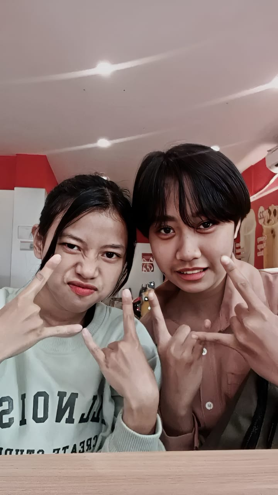
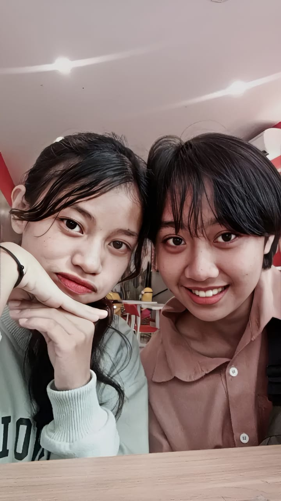
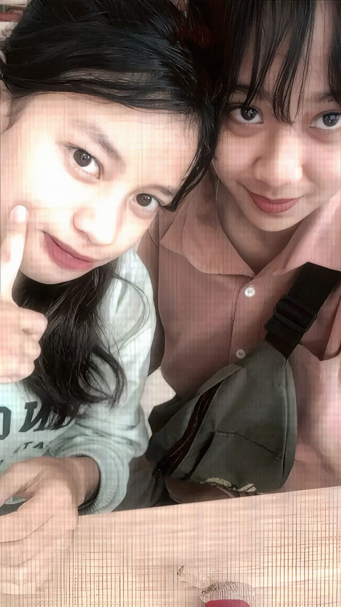
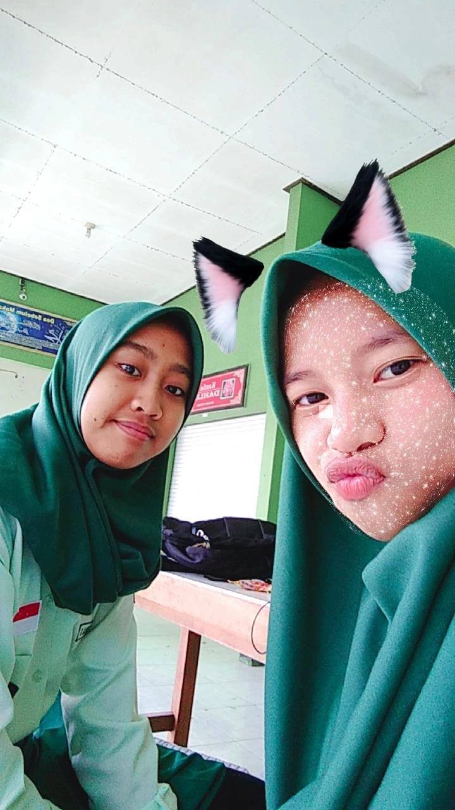
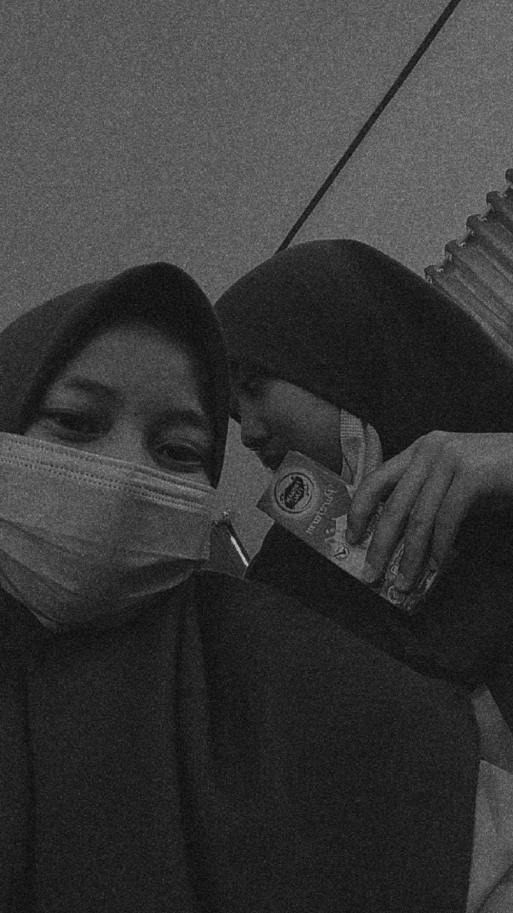
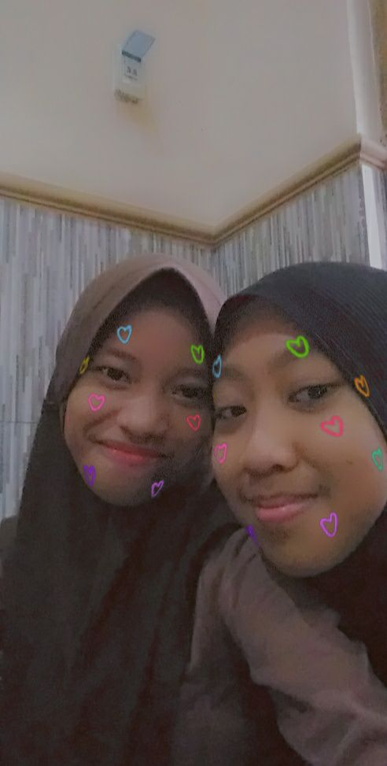
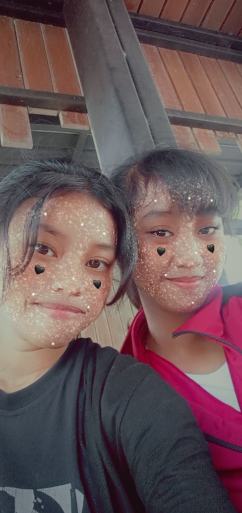
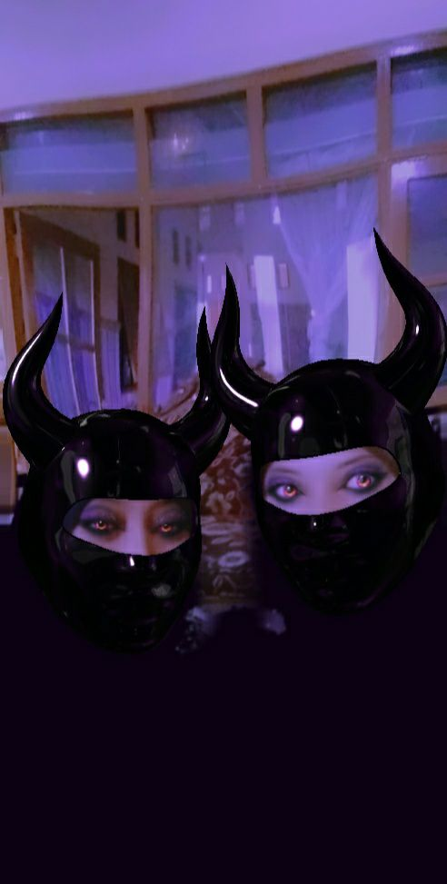
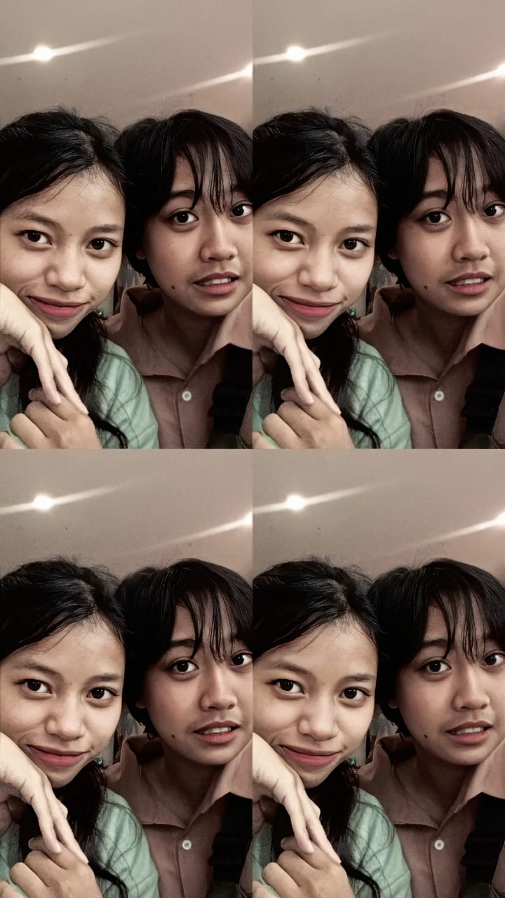

Sebelum kita bertemu, aku hanyalah seseorang yang berjalan tanpa benar-benar tahu ke mana arah hidupku. Hari-hariku terasa datar, tanpa hasrat, tanpa cahaya yang membuatku ingin menoleh dan bertahan lebih lama. Aku tumbuh dalam tuntutan—menjadi versi “sempurna” menurut mereka, bukan menurut diriku sendiri.
Sejak kecil, aku belajar untuk menahan. Menahan suara. Menahan tangis. Menahan diri agar tidak salah.
Aku tidak benar-benar mengenal seperti apa hubungan yang hangat itu. Yang aku kenal hanyalah suara tinggi, bukan tutur lembut. Teguran keras, bukan pelukan yang menenangkan. Rumah yang seharusnya menjadi tempat pulang dan bercerita, perlahan berubah menjadi ruang yang membuatku ingin cepat dewasa dan pergi. Masalaluku tidak seindah yang orang lihat. Tidak sehangat yang orang kira.
Lalu kamu datang.



Dan mungkin, tanpa banyak kata, kamu juga pernah merasakan sepi yang serupa. Itulah sebabnya kamu mengerti tanpa perlu aku menjelaskan panjang lebar. Kamu tidak pernah menjadikan masa laluku sebagai aib. Kamu tidak pernah memaksaku menjadi kuat di saat aku lelah. Bersamamu, aku merasakan sesuatu yang dulu tidak pernah kupunya—sebuah pertemanan yang benar-benar tulus. Untuk pertama kalinya, aku merasa dimengerti. Dan untuk pertama kalinya, aku merasa tidak sendirian.
Pertama kali aku bertemu denganmu, aku masih duduk di bangku SMP. Aku terlihat punya teman, tapi tidak pernah benar-benar merasa memiliki siapa pun. Aku ada di antara mereka, namun tidak pernah benar-benar diajak masuk ke dalam percakapan. Aku mencoba terlihat “asik”, mencoba tertawa bersama mereka, mencoba menyesuaikan diri—tapi rasanya selalu ada jarak yang tidak bisa kutembus. Ejekan mereka masih kuingat jelas. Tentang fisikku. Tentang gigiku yang saat itu memang tidak sempurna. Kata-kata mereka mungkin terdengar sepele bagi orang lain, tapi bagiku itu cukup untuk menekan rasa tidak percaya diri yang sudah susah payah aku kubur dalam-dalam.



Aku merasa sendirian, meski berada di tengah keramaian. Lalu di kelas 8, aku bertemu denganmu. Awal kita tidak indah. Kita sering bertengkar, berbeda pendapat, bahkan saling menyakiti dengan kata-kata. Ada masa di mana demi mempertahankanmu, aku sampai menurunkan harga diriku sendiri—memohon agar kamu tetap berteman denganku. Jika kuingat sekarang, mungkin aku terlihat menyedihkan. Mungkin memalukan. Tapi entah mengapa, sejak awal aku merasa kamu adalah orangnya. Di balik semua pertengkaran itu, ada sesuatu yang berbeda. Kamu melihatku, bukan sekadar menatapku. Kamu mengerti tanpa harus selalu aku jelaskan panjang lebar. Kamu tidak menertawakan kekuranganku. Kamu tidak menjadikannya bahan candaan.
Dan tanpa kusadari, hubungan yang dimulai dengan cara yang tidak sempurna itu justru bertahan. Hari demi hari. Tahun demi tahun. Hingga sekarang. Kadang aku berpikir, mungkin memang bukan awal yang indah yang menentukan segalanya. Tapi siapa yang tetap memilih tinggal, meski sudah melihat sisi rapuh kita. Dan kamu tetap di sini.
Setiap masa pasti memiliki ujiannya sendiri. Dan mungkin, itu adalah bagian kita. Karena tekanan dan prinsip yang ditanamkan sejak kecil, aku sempat melangkah ke arah yang salah. Aku melakukan sesuatu yang kini membuatku malu dan menyesal. Bukan hanya karena kesalahannya, tapi karena dampaknya menyeretmu masuk ke dalam masalah yang seharusnya hanya menjadi tanggung jawabku. Kamu tidak bersalah. Tapi namamu disebut. Kamu ditarik masuk, bahkan difitnah sebagai dalang dari semua yang terjadi. Aku masih mengingat jelas bagaimana ibuku mengatakan bahwa aku tidak pantas berteman denganmu. Bahwa kita tidak seharusnya bersama lagi. Kalimat itu menyakitiku. Bukan karena larangannya, tapi karena kamu yang tidak bersalah justru harus ikut menanggungnya. Jika bisa, rasanya aku ingin berlutut dan meminta maaf untuk semua itu. Untuk kesalahan yang kubuat. Untuk beban yang tak sengaja kubagi padamu.
Tapi kamu tetap sabar, Ell. Kamu tidak membalas dengan amarah. Kamu tidak pergi. Kamu tetap tenang di tengah kekacauan yang bahkan bukan milikmu. Cara kamu menghadapi semuanya membuatku kagum. Sering kali aku bertanya dalam hati, “Bisakah aku sekuat Ellita?” Dan akhirnya, masalah itu berlalu. Waktu berjalan. Ibuku memaafkanmu. Semua perlahan membaik. Namun ada satu hal yang masih membuat hatiku berat. Saat kamu kehilangan ibumu, aku tidak benar-benar ada di sisimu seperti yang seharusnya. Di saat kamu memikul rasa bersalah dan kehilangan yang begitu dalam, aku tidak mampu menjadi tempat bersandar yang cukup kuat untukmu. Dan untuk itu aku minta maaf, Ell.
Mungkin website ini sederhana. Mungkin tidak seberapa. Tapi melalui setiap kata di dalamnya, aku ingin kamu tahu—aku menyesal pernah membuatmu terluka. Aku menyesal pernah tidak cukup hadir. Tapi aku bersyuku karena meski diterpa ujian, kita tetap memilih untuk tinggal.
Kini, 2026 — Kita yang Tetap Bertahan
Sekarang, tahun 2026. Jika melihat ke belakang, rasanya hampir tidak percaya bahwa kita sudah melewati begitu banyak hal. Luka, kesalahpahaman, fitnah, kehilangan, rasa bersalah, bahkan hampir kehilangan satu sama lain. Semua itu pernah ada di perjalanan kita. Tapi kita masih di sini. Kita tidak memilih jalan yang mudah. Kita memilih untuk bertahan. Untuk saling menggenggam saat salah satu hampir menyerah. Untuk memikul beban bersama, meski kadang beratnya tidak seimbang. Kita belajar. Kita dewasa. Kita saling mengerti dengan cara yang lebih tenang dari sebelumnya. Kini, kita tidak lagi berteman karena takut sendirian. Kita bertahan karena memang ingin bersama. Di antara semua orang yang datang dan pergi, kita tetap memilih untuk tinggal.
Bukan karena tidak pernah lelah, tapi karena tahu bahwa yang kita miliki terlalu berharga untuk dilepaskan. Dan hari ini, saat aku menulis ini, aku sadar satu hal: Kita berhasil. Bukan karena kita sempurna. Bukan karena kita tidak pernah salah. Tapi karena kita selalu kembali. Dan selama kita masih saling menggenggam seperti ini. aku percaya, kita akan terus bertahan.
Tidak peduli sejauh apa langkah kita nanti. Tidak peduli sepanjang apa umur yang diberikan pada kita.
Aku hanya berharap satu hal— Tetaplah menjadi temanku. Sahabatku. Keluargaku. Dan rumah tempat aku pulang.
Entah hidup membawa kita ke mana, entah waktu mengubah banyak hal, aku ingin kita tetap memilih satu sama lain. Bukan karena terpaksa. Bukan karena takut sendiri. Tapi karena kita tahu, setelah semua yang terjadi, kita masih ingin bersama. Hidup… dan juga mati. Karena aku pun akan melakukan hal yang sama untukmu. Aku mencintaimu, kawan. Bukan dengan cara yang rumit, tapi dengan cara yang tulus dan bertahan.
Aku bersyukur dipertemukan denganmu— dengan seseorang yang kuat, yang hebat, yang sabar, dan yang tidak pernah menyerah pada hubungan ini.
Jika dunia terasa berat suatu hari nanti, ingatlah kita pernah melewati badai yang lebih besar dari ini. Dan kita tetap di sini.


